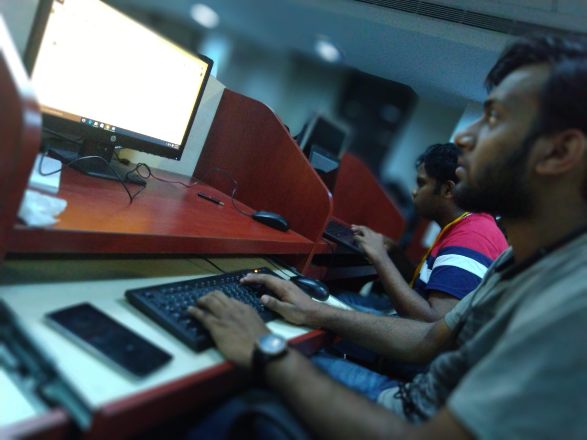
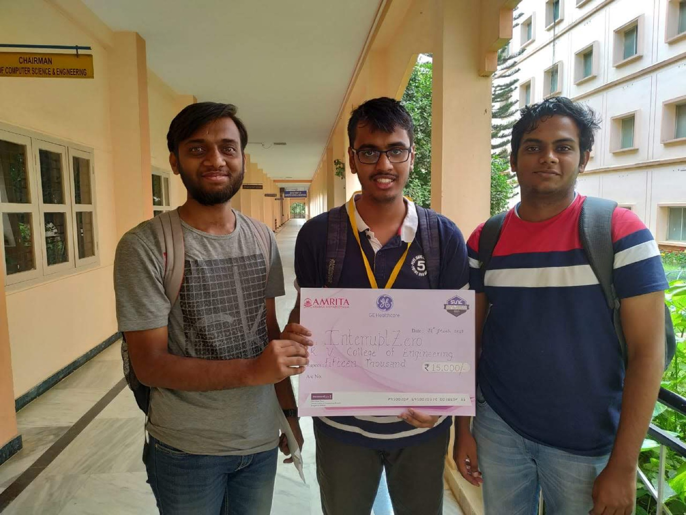
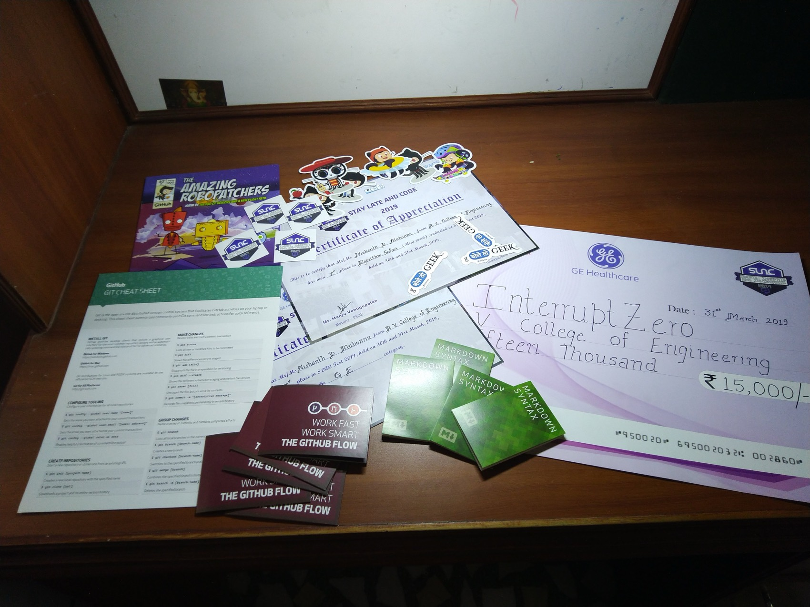

Stay Late And Code 2019 · Amrita School of Engineering, sponsored by GE Healthcare
A voice assistant with the internet switched off
Surgeons cannot use a touchscreen with wet or gloved hands. GE's brief was voice control that authenticates the speaker and never leaves the machine, which rules out every easy answer at once.
Stay Late and Code is Amrita School of Engineering's annual hackathon. The 2019 edition ran over the 30th and 31st of March, twenty-four hours, about 250 teams submitting and roughly 80 making it through. GE Healthcare sponsored it and set four problem statements. We picked one.
Interrupt Zero this time was three people: Mahadev Maitri, Vijay Koundinya and me.
01The brief
GE's problem statement is worth reading as they wrote it, because the constraint is buried in the middle of a sentence:
Compatible System Assistant: Similar to Alexa, Siri, develop a
voice control package which could run on System without connecting
to Internet with a very limited voice command set to authenticate
user and authorize him/her to control the System.And the reason, which they also supplied:
The medical systems offered by GE are mostly used in sterile/wet
environment and often user needs to interact with the system by
using the touchpad/keyboard which is difficult as hands could be
wet/need to re-sterile after using the system, he/she could be
wearing gloves and the touchpad doesn't recognize the input.It is a good brief because the justification is concrete and the constraint follows from it. Somebody in an operating theatre has hands they cannot use on a touchpad, and re-sterilising is not free. Voice is the obvious answer. And a machine in that room may not have a network, may not be allowed one, and certainly should not be shipping theatre audio to somebody's cloud.
02Why "offline" is the whole problem
Five months earlier we had built a voice system that leaned on Google's speech-to-text API. Send audio up, get text back. The hard part was never the recognition, because somebody else had already solved the recognition.
Take the network away and that entire arrangement collapses. No API. No large model, because it has to run on whatever the machine already is. And the accuracy you were borrowing from a cloud service is now yours to produce.
The interesting constraint in a brief is usually the one phrased as an aside. "Without connecting to Internet" is six words, and it invalidates the solution everybody in the room already knows.
The way out is the second half of the brief: a very limited voice command set. You do not need open-vocabulary transcription to operate a machine. You need to reliably tell a dozen fixed words apart. That is a much smaller problem, and a small problem is one that fits offline.

03What we built
Two pieces, both required to run with the network unplugged.
Command recognition. We retrained TensorFlow's Simple Audio Recognition model on a small fixed vocabulary: words like on, off, start, stop. That model is designed for exactly this shape of problem: keyword spotting over a handful of short words, small enough to run on device. Retraining it on the command set, rather than reaching for general transcription, is what made the offline requirement survivable.
Authentication. Hidden Markov Models again, per speaker, as at inGenius. The same approach we already knew, applied to the half of the brief that said authenticate user and authorize him/her. Crucially it also runs locally, so neither half of the system needed a network.
We shipped it on two platforms: an Android app, and a Flask application so the same model could run on a Windows PC. The deck we pitched with was titled Voice Based Assistant with Authentication, and the multi-platform angle was deliberate, because GE's brief asked for something customisable per product rather than a single fixed appliance.
The judges' feedback, as recorded at the time, singled out the scalability and the fact that we had it running on both web and Android. Not the models. The thing that landed was that it worked in two places, which is a product argument rather than a technical one.
04What carried over
This was the second of three speech problems in five months, and the first time the repetition paid off. The HMM work from November went in almost directly. Knowing that speaker identity and word recognition are separate problems, solved by separate models, meant we did not waste any of the twenty-four hours discovering it.
What we still did not do was measure anything. There is no accuracy figure for the command recogniser, none for the authenticator, and no false-accept rate. For something whose job is to authorise control of a medical device, that is the number that would actually matter. The slides have four "Results" sections and every one of them is a screenshot.
05Result
First place, ₹15,000. Second took ₹10,000.


The code, the Android project and the original pitch deck are still up at github.com/nishu88/StayLateAndCode-SLAC-2019-Hackathon. The README there is written by Vijay, not me.